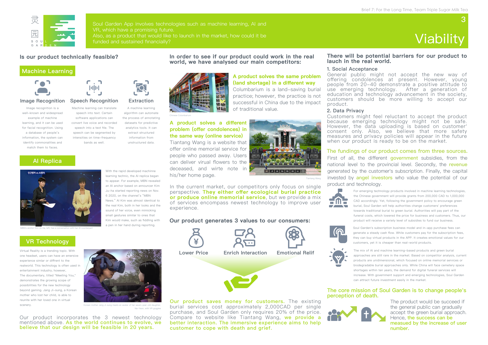
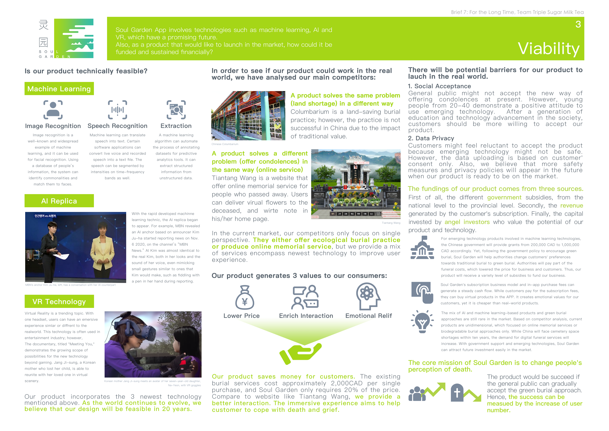
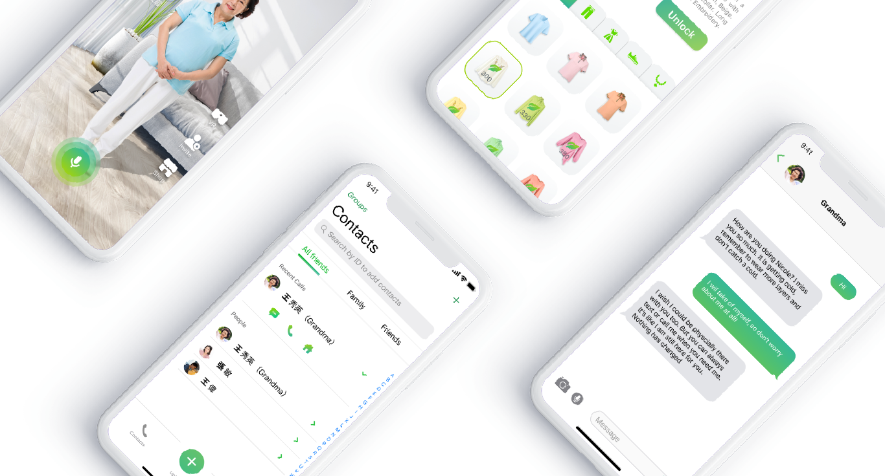
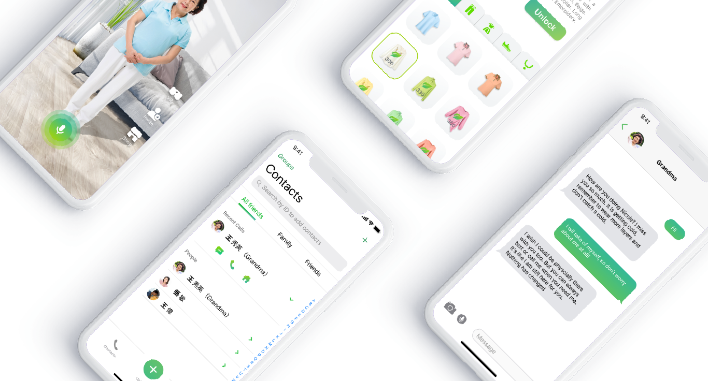

Soul Garden
In China, about 8 million people die every year, and most of the cemetery space will be depleted within 10 years.
Government has encouraged ecological burial practices such as tree burial,
however, the public’s burial choice does not change accordingly.
Soul Garden is a mobile APP that aims to encourage natural deep burials by
changing people’s perception of death and reducing the sense of guilt and social pressures
Role Taken
Project Lead
As the project lead of the team, I was resiponsible for meeting arrangement, material organization, and progress management.
Research Lead
As the research lead of the team, I involved in both primiry research and secondary research.
Functionality Design
As a member of the design team, I mainly conducted myself in the feature design of the product and usability test.
Deliverable

 

 
